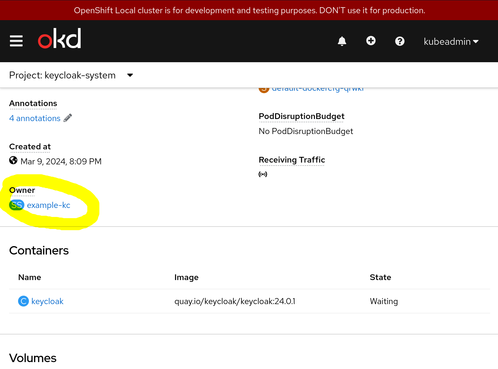
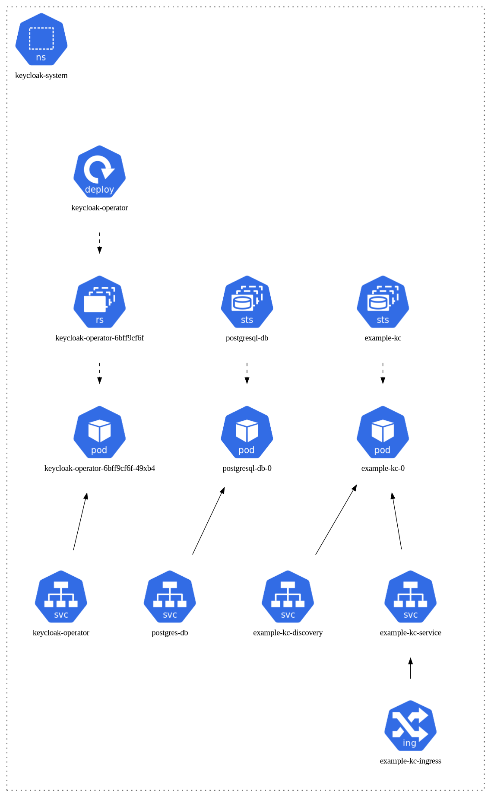
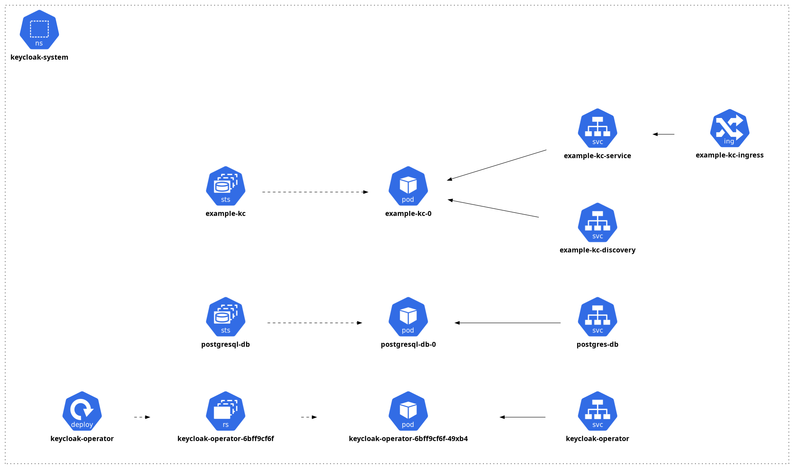

Visualizing Kubernetes with Generated Diagrams
Kevin Howell
Red Hat
Agenda
- Kubernetes primer
- Exploring resources without diagrams
- k8sviz
- kubectl graph
- Advice

About Me
- Principal Software Engineer at Red Hat
- console.redhat.com subscriptions Tech Lead
- Raleigh, NC
- @kahowell@mastodon.social
- https://kahowell.net
Kubernetes Primer
- Declarative interface
- API resources
- Distributed workloads
- Container-centric

Abstractions in Kubernetes
Navigating Relationships - CLI
Get owner:
kubectl get $type/$name \
-o template \
--template \
'{{(index .metadata.ownerReferences 0).kind}}/'\
'{{(index .metadata.ownerReferences 0).name}}'… and repeat
Navigating Relationships - GUI
Owner Links in OpenShift/OKD
The Pattern for Diagrams
- Query Resources
- Draw a graph
- k8s resources, relationships
- as nodes and edges
k8sviz
https://github.com/mkimuram/k8sviz
Installation
k8sviz - Results
keycloak diagram
k8sviz - Results (edited)
keycloak diagram - edited for LR layout & bigger font
k8sviz - Ideas for Improvment
- packaging
- layout, font options
- filters
- custom resource support
- offline support (helm charts, kustomize)
kubectl-graph
https://github.com/steveteuber/kubectl-graph
Installation
kubectl-graph - Graphviz
kubectl-graph - Mermaid (edited for LR layout)
graph LR 60a85292-052f-210d-178a-3829b4f551bb((keycloak-...)):::Namespace 5e4e0c9f-db23-447a-8e91-0e3e2d6b0b20((keycloak-...)):::ReplicaSet a3e07832-474c-4042-983e-d098a760fb4d((example-kc-0)):::Pod 6bbe31ab-4d6b-4911-9dae-a311bae1dc87((example-kc)):::StatefulSet e07c0e8b-1c22-bfad-3ecd-a1cff0450321((keycloak)):::Container 8e77e145-c83d-2ddb-6123-72cf7664cd35((keycloak-...)):::Container c7468ee8-d08e-10f0-6c57-e8c5a2b7b319((api.crc.t...)):::Cluster 8d1b02ce-8247-449b-888c-5ab3770e7f07((keycloak-...)):::Deployment 0ba2caef-915f-41d8-b742-0c18cbaae490((keycloak-...)):::Pod c5bf27c6-b79a-48f1-b1e6-bf3392b9ed8a((postgresq...)):::Pod 97945256-8cc4-4e25-9f24-dfe2eac17b48((postgresq...)):::StatefulSet 93893b75-19b3-dcd9-6301-416922554914((postgresq...)):::Container f9b274dc-00d1-4767-954f-3f9c343f5547((example-kc)):::Keycloak 0ba2caef-915f-41d8-b742-0c18cbaae490 -- Container --> 8e77e145-c83d-2ddb-6123-72cf7664cd35 97945256-8cc4-4e25-9f24-dfe2eac17b48 -- Pod --> c5bf27c6-b79a-48f1-b1e6-bf3392b9ed8a c5bf27c6-b79a-48f1-b1e6-bf3392b9ed8a -- Container --> 93893b75-19b3-dcd9-6301-416922554914 c7468ee8-d08e-10f0-6c57-e8c5a2b7b319 -- Namespace --> 60a85292-052f-210d-178a-3829b4f551bb 60a85292-052f-210d-178a-3829b4f551bb -- Deployment --> 8d1b02ce-8247-449b-888c-5ab3770e7f07 60a85292-052f-210d-178a-3829b4f551bb -- Keycloak --> f9b274dc-00d1-4767-954f-3f9c343f5547 8d1b02ce-8247-449b-888c-5ab3770e7f07 -- ReplicaSet --> 5e4e0c9f-db23-447a-8e91-0e3e2d6b0b20 6bbe31ab-4d6b-4911-9dae-a311bae1dc87 -- Pod --> a3e07832-474c-4042-983e-d098a760fb4d a3e07832-474c-4042-983e-d098a760fb4d -- Container --> e07c0e8b-1c22-bfad-3ecd-a1cff0450321 5e4e0c9f-db23-447a-8e91-0e3e2d6b0b20 -- Pod --> 0ba2caef-915f-41d8-b742-0c18cbaae490 f9b274dc-00d1-4767-954f-3f9c343f5547 -- StatefulSet --> 6bbe31ab-4d6b-4911-9dae-a311bae1dc87 60a85292-052f-210d-178a-3829b4f551bb -- StatefulSet --> 97945256-8cc4-4e25-9f24-dfe2eac17b48
kubectl-graph - Ideas for Improvment
- alternative packaging (rpm, deb)
- icons
- layout, font options
- edge choices
Advice
- Don’t be afraid to edit diagrams
- Try multiple tools/formats
Red Hat Developer
- no-cost subscription for individuals
- free sandbox environments
- https://developers.redhat.com
Q&A
Thanks for attending!
- @kahowell@mastodon.social
- https://kahowell.net
Note
Title slide Photo by orbtal media on Unsplash